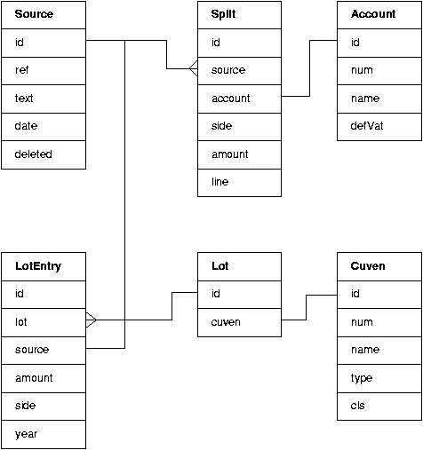

Gryn for programmers
Copyright 2003-2005 Odd Arild Olsen
Basic ideas behind Gryn
Gryn is an open source accounting module that knows how to handle the objects
used for accounting and store and retrieve them from a database.
Gryn has a database access backend for data-storage, allowing easy
adaption to several kinds of databases. Thus an accounting application
is three-layered: An application part (GUI or a combined Control/View),
the model modules and a data base access layer.
The database is only used for persistent
storage, the database engine do not do any search or assembly of
database entries. There are mainly two reasons to use a database
instead of flat files for storage:
- An object can be saved immediately in the database, the database
acting as an random access file. A flat file, e.g. XML, is most
easily written all at once, usually when the program closes. A
database storage is therefore more likely to survive a program
crash without loosing the last changes.
- The database backend only reads and writes the
data fields known to Gryn. The database can therefore easily be common
for several applications. An example: Gryn knows a minimum about each
customer, essentially the customer name and customer number. However,
an invoicing program must also know the address, rebate rates, payment
terms etc. A common customer database table can therefore contain all
data fields about a customer needed by all applications, without the
applications knowing anything about the other applications' use of the
table.
Gryn provides services for an application program, probably a
graphical user interface (GUI). Gryn is totally independent of the
application program as Gryn never accesses data or functions of the
application program. The first GUI layer use the Qt
library, the gtk library is a capable alternative which also uses a
signal and slot event mechanism. Gtk and Jyton have more liberal
licenses than Qt and may therefore be preferable, especially if one
plans a port to an other operating system.
Gryn has, and in my opinion shall have, a functionality limited to
that of keeping books. Other business activities should be located in
their own applications or modules. Examples of such independent
applications are payroll and invoicing. They don't really have much to do
with the bookkeeping, and may be undertaken at other days and under
other circumstances than accounting. Invoices may be
produced almost continuously by several persons in a
sales department, while the book keeping is done may be once a week or
month. Gryn's limited capability follows wise Unix-tradition: let each
program do a small job, but do it well.
The isolation between book keeping and other tasks is not total. Gryn
uses a queue concept. The other application, take the
invoicing program as an example here, generates data to be imported
into the accounting database. An entry in an invoice queue database table
is made for each invoice produced. The entry keeps information about
the customer number, invoice number, invoice date, net and gross
amounts, VAT rate and such. During accounting the book keeper imports
the invoice queue and an entry in the books are automatically produced
for each invoice. Import queues may be used for payrolls, taxes, bank
statements, cash registers and so on.
Gryn is an accounting software for use in education and for small
companies. I think simple program and data structures are
important. Simplicity lowers both the entry level for programmers and
the bug-intensity. But simplicity and on-demand computations
also cause a scaling problem when the number of transactions rise.
However, some optimalisation can be introduced here and there
(e.g. map and reduce etc. or implement time consuming functions i C).
Reports are generated by separate classes. One may define classes for
general ledger print outs, transactions, VAT-statements an so on.
However, many of these will vary from country to country, and perhaps
also among companies. These classes may therefore come in many
variants, the one to use is chosen by the user by directory links.
Report generating classes produce html for
GUI on screen view and LaTeX for printing.
What Gryn is not
A complete company administration package, it does not even have a
calender dialogue or calculator. Gryn can only keep accounting books.
Gryn is not suited for large organizations,
it does not scale well with a large number of
transactions. Maybe Sqledger will fit better in such cases.
Gryn is not a closed proprietary program, nothing about the program is
hidden, you do not become locked to one provider's accounting program.
Gryn may not be well suited for personal use, check out Gnucash for
such use.
The underlying structure and dialogs reflect bookkeeping as done in
Norway. I do not know how well this suits users from other countries.
The main objects
All persistent objects have a field called id. This is a unique
number for each object instance within the class. This number is
assigned when the instance is saved in the databases. All object
linking is done by these unique numbers. Text strings associated with
objects are therefore only symbolic labels for convenience. The user
may therefore edit several object fields during the year without
causing any problem. As an example: the account object has a account
number and name property. These can be freely edited as they
are only used by the GUI and report generators.

The main objects
are shown in the figure above. They are:
- Source
- The main object for entries in the general ledger. The object
holds information on date, text, reference number and such.
- Split
- A split describes one posting, i.e. an amount and an account.
A source object has at least two
splits, one for the debit and one for the credit posting.
The sum of all splits for a source shall always be
equal to zero. That is an important rule of double entry book
keeping.
- Lot
- Lots keep track of our customer and vendor transactions. A new
lot is opened when an invoice is recorded in our books. All
repayments are also recorded in the lot and when the invoice is
settled the sum is zero and the lot is closed. Lots are the base
object of the subsidiary ledger.
- LotEntry
- A lot entry describes one transaction of a lot. Essentially the
amount and a source reference. A lot has at least two lot entries
when closed.
- Account
- Account objects describe the properties of one account in the
account plan. Important fields are account number and account
name. A bit-field integer flags is reserved to characterize
default behavior of the account, e.g. what kind of account and
special hooks for use in the GUI.
- Cuven
- This is a object for the properties of customers and vendors.
Keeps their name and number
Account and Cuven objects are helper-objects not directly part of the
books but providing some useful properties.
Source, Split, Lot and LotEntries are the
result of a specific general ledger entry.
Cash based accounting do without the lower objects of the
figure.
Open lots and their lot entries must be transfered from year to year
until closed.
These objects are examples of objects directly mirroring rows in
database tables. The Source object thus corresponds to a row of the
database table named source. Such objects are collected in lists, each
list mirroring a full table of the database. The collection of all
such lists is called 'books' in the Gryn modules.
The figure indicates some links between the objects. Splits link to
sources by keeping a reference to the Source id. A Split also keeps a
reference to the posting's Account id. If we have a Split object we
can find the Source object it belongs to and the information
about the Account it applies to.
A Lot keeps reference to the relevant Cuven id, nothing more.
LotEntries keep references to the Source object that they were
generated with and the Lot they belong to.
So, to find all the objects belonging to one source we do this:
- Search the Split list for all splits referencing
the Source
- Look up the Account referenced by the Split in the
account list
- Search the LotEntry list for any entry referencing the
Source
- If a LotEntry was found, find the Lot referenced by the lot
entry
- Look up the cuven list for the customer/vendor
referenced by the Lot.
This procedure may seem complicated, but in fact it makes things
simpler. The first point is that no information is saved
more than one place. That helps to keep the data model
consistent. Next, we only have one way references, this helps to reduce the
probability of broken object links. Since we do not cache any computed results
we also do not open a typical honey-pot for bugs.
For general ledgers with many entries this will cause a lot of list
searches and sluggish performance. One way to optimize search is
to keep the lists sorted by a key property and use binary search. An
even faster way is to keep dictionary versions of the list, using
the most frequently used search property as key.
All object linking is by the objects' unique index 'id'. This property
can not be changed. This allows all the other fields of the object to
be changed without affecting the links. Example: An account object's
name and account number may be edited without causing any
problem. Many of the object properties are irrelevant to Gryn but is
kept as a service to the GUI.
Program main principles
The Gryn modules are organized in four directories: Model, Database,
Report and Import. The Model directory holds all class and list
definitions related to the book keeping. Report is for the classes
used for report generation, Database is for the components of the
database back end and Import is where functions used for import of
data from other accounting system are to reside.
The Report classes initially can produce html and LaTex output. The
html version is for the user interface to display, the LaTeX output is
for printing. LaTeX is fine for report printing, but groff may be
better since groff is installed on all Linux work stations. To add
groff support: go through the Report classes and add formating
directives for groff too.
The larger part of
the Gryn modules implements the several objects needed and their
corresponding list objects. The object and object-list classes are
sub-classed from the Gobject and GList classes. A new object class and
accompanying list class is very simple to create by following some
naming conventions.
Transfer from year to year
The goal is to keep the books of each year in separate
databases. Previous year's books need therefore not be kept
online. However, some information from the previous year must be
available in the new year books. We must therefore have a transfer
mechanism. This is not implemented yet, but my ideas about this are:
- A new ledger will automatically have two sources, number 0 and
1. All automatically generated transfers to the new year appear as
splits in source 0. The bookkeeper may then add corrections for the
generated opening splits in source number 1.
- The bookkeeper may view source 0 and 1, but not edit source 0
- As only automatic transfers appear in source 0, transfers may be
performed several times. One may therefore keep the books of year n+1
before the books of year n are closed. Each time a source in year n is
changed the opening properties of year n+1 may be updated.
- When the books of year n are closed, the client object of this
year is marked as closed. The user may now move this database to
external storage.
- The actual transfer can be separated into several steps:
- zero accounts and calculate new equities
- Copy the equities to source 0
- Collect all open lots and their lot entries and copy them to the next
year
- Customer, vendor and account tables are only transferred when the
new year client is created.
Opening a new client
If the client is a new company: just make a new client.
If the client is an existing company there will be opening equities
and probably some
open lots. We must have some mechanism to introduce lots and their
lot entries into a new client database. A simple possibility is to open a
new client for year n-1, create sources for the lots and equities and
then transfer to the first real year n. Year n-1 database may then be
discarded. Opening equities may also be introduced in source number 1.
Which database?
The first version of Gryn uses MySql. That works quite well, but some
users may prefer other databases. Implementing access to
a new database involves the reimplementation of the methods of
MySql.py and Exceptions.py.
I would like to see an SQLite implementation. Some pres of this
database are:
- The database server will be linked to the Gryn program, the server is
thus not a network server and some speedup can be expected.
- Easier installation: The user do not have to install or maintain a
working database server just to run Gryn.
- The SQLite databases may sit in the user's home directory. This is
very convenient for educational use of Gryn. A student can create a
new client for each assignment and each student's databases are fully
isolated from the rest of the class. The problems associated with
access rights and creating unique database
names are thus eliminated.
Databases
There is one central database gryn. To day this database only
has one table: client. The client-table has one row for each
client containing the client's properties. A client is a separate set
of books, so clients may be companies. Students will probably create
a client for each assignment.
A client's tables reside in a separate data base. The name of
this database consists of three parts: 'gryn', the client index number from
the client table and the year, e.g. gryn_12_2003.
Other ideas to implement some day...
Customer and vendor class bit-field
The customer/vendor object has an integer bit-field property named
cls. This property is planned to be used for assigning
customers/vendors to groups of business associates. A sports club may
organize their members into gender, year of birth etc. One member may
thus be associated with both a gender and age class.
External programs may access the customer/vendor database table and
act according to the group associations.
As an example: A sports club has organized their members in classes
based on year of birth and the activities they participate in,
e.g. football and swimming. A program can then run trough the customer
database, pick the members, calculate their membership dues and
produce an invoice for each member. The invoice queue can then be
imported into Gryn.
A report generator can produce listings of open lots based on the
class. For example all open lots for girls born in 1995.
Dimensions
Dimensions is a strategy to associate source splits with a class. It
is only possible to associate one dimension with one class, not with
several as for
vendor/customer class bit-field. Dimensions are useful for selective
report generation. There may be one or more dimensions. Common
dimensions are: Department, project, person. A split may be associated
with one or more of these three dimensions. One may therefore produce
reports on e.g: a persons total wage for a period, a department's
wage costs, a project's wage costs or a project's wage costs at a
particular department.
Budget
The account object has a budget-property. However, no functionality is
implemented for this property yet. Some tools are needed to handle the
budget properly, e.g. to compare budget and real values for some
period.